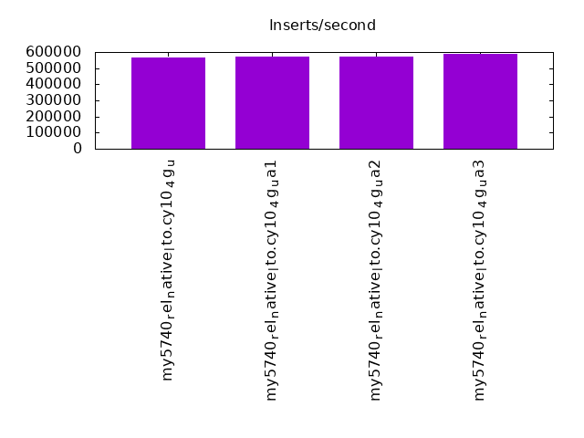
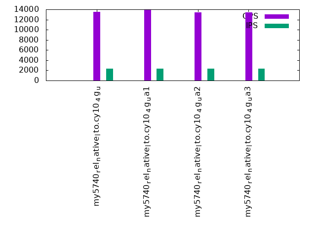

Introduction
This is a report for the insert benchmark with 480M docs and 24 client(s). It is generated by scripts (bash, awk, sed) and Tufte might not be impressed. An overview of the insert benchmark is here and a short update is here. Below, by DBMS, I mean DBMS+version.config. An example is my8020.c10b40 where my means MySQL, 8020 is version 8.0.20 and c10b40 is the name for the configuration file.
The test server has 80 cores with hyperthreads enabled, 256G RAM and fast storage. The benchmark was run with 24 clients and there were 1 or 3 connections per client (1 for queries or inserts without rate limits, 1+1 for rate limited inserts+deletes). There are 24 tables, with a client per table. It loads 480M rows without secondary indexes, creates secondary indexes, then inserts 120M rows with a delete per insert to avoid growing the table. It then does 3 read+write tests for 3600s each that do queries as fast as possible with 100, 500 and then 1000 inserts/second/client concurrent with the queries and 1000 deletes/second to avoid growing the table. The database is cached by the OS but not by InnoDB.
The tested DBMS are:
- my5740_rel_native_lto.cy10_4g_u - InnoDB and MySQL 5.7.40, rel_native_lto build, cy10_4g_u config, compiled with CMAKE_BUILD_TYPE=Release, base config
- my5740_rel_native_lto.cy10_4g_ua1 - InnoDB and MySQL 5.7.40, rel_native_lto build, cy10_4g_ua1 config, compiled with CMAKE_BUILD_TYPE=Release, adds innodb_use_native_aio=off
- my5740_rel_native_lto.cy10_4g_ua2 - InnoDB and MySQL 5.7.40, rel_native_lto build, cy10_4g_ua2 config, compiled with CMAKE_BUILD_TYPE=Release, adds innodb_io_capacity=20k, innodb_io_capacity_max=40k
- my5740_rel_native_lto.cy10_4g_ua3 - InnoDB and MySQL 5.7.40, rel_native_lto build, cy10_4g_ua3 config, compiled with CMAKE_BUILD_TYPE=Release, adds innodb_io_capacity=20k, innodb_io_capacity_max=40k, innodb_flush_sync=OFF
Contents
- Summary
- l.i0: load without secondary indexes
- l.x: create secondary indexes
- l.i1: continue load after secondary indexes created
- q100.1: range queries with 100 insert/s per client
- q500.1: range queries with 500 insert/s per client
- q1000.1: range queries with 1000 insert/s per client
Summary
The numbers are inserts/s for l.i0 and l.i1, indexed docs (or rows) /s for l.x and queries/s for q*.2. The values are the average rate over the entire test for inserts (IPS) and queries (QPS). The range of values for IPS and QPS is split into 3 parts: bottom 25%, middle 50%, top 25%. Values in the bottom 25% have a red background, values in the top 25% have a green background and values in the middle have no color. A gray background is used for values that can be ignored because the DBMS did not sustain the target insert rate. Red backgrounds are not used when the minimum value is within 80% of the max value.
| dbms | l.i0 | l.x | l.i1 | q100.1 | q500.1 | q1000.1 |
|---|---|---|---|---|---|---|
| my5740_rel_native_lto.cy10_4g_u | 565371 | 2595135 | 14332 | 13544 | 5825 | 3725 |
| my5740_rel_native_lto.cy10_4g_ua1 | 574163 | 2513612 | 13498 | 13980 | 4081 | 3533 |
| my5740_rel_native_lto.cy10_4g_ua2 | 570749 | 2513612 | 14407 | 13439 | 5352 | 3614 |
| my5740_rel_native_lto.cy10_4g_ua3 | 587515 | 2637912 | 14420 | 13417 | 5569 | 3642 |
This table has relative throughput, throughput for the DBMS relative to the DBMS in the first line, using the absolute throughput from the previous table. Values less than 0.95 have a yellow background. Values greater than 1.05 have a blue background.
| dbms | l.i0 | l.x | l.i1 | q100.1 | q500.1 | q1000.1 |
|---|---|---|---|---|---|---|
| my5740_rel_native_lto.cy10_4g_u | 1.00 | 1.00 | 1.00 | 1.00 | 1.00 | 1.00 |
| my5740_rel_native_lto.cy10_4g_ua1 | 1.02 | 0.97 | 0.94 | 1.03 | 0.70 | 0.95 |
| my5740_rel_native_lto.cy10_4g_ua2 | 1.01 | 0.97 | 1.01 | 0.99 | 0.92 | 0.97 |
| my5740_rel_native_lto.cy10_4g_ua3 | 1.04 | 1.02 | 1.01 | 0.99 | 0.96 | 0.98 |
This lists the average rate of inserts/s for the tests that do inserts concurrent with queries. For such tests the query rate is listed in the table above. The read+write tests are setup so that the insert rate should match the target rate every second. Cells that are not at least 95% of the target have a red background to indicate a failure to satisfy the target.
| dbms | q100.1 | q500.1 | q1000.1 |
|---|---|---|---|
| my5740_rel_native_lto.cy10_4g_u | 2380 | 11901 | 11262 |
| my5740_rel_native_lto.cy10_4g_ua1 | 2380 | 10945 | 10774 |
| my5740_rel_native_lto.cy10_4g_ua2 | 2380 | 11907 | 11744 |
| my5740_rel_native_lto.cy10_4g_ua3 | 2378 | 11904 | 11619 |
| target | 2400 | 12000 | 24000 |
l.i0
l.i0: load without secondary indexes. Graphs for performance per 1-second interval are here.
Average throughput:
Insert response time histogram: each cell has the percentage of responses that take <= the time in the header and max is the max response time in seconds. For the max column values in the top 25% of the range have a red background and in the bottom 25% of the range have a green background. The red background is not used when the min value is within 80% of the max value.
| dbms | 256us | 1ms | 4ms | 16ms | 64ms | 256ms | 1s | 4s | 16s | gt | max |
|---|---|---|---|---|---|---|---|---|---|---|---|
| my5740_rel_native_lto.cy10_4g_u | 0.193 | 47.744 | 52.015 | 0.005 | 0.043 | 0.090 | |||||
| my5740_rel_native_lto.cy10_4g_ua1 | 0.132 | 55.021 | 44.799 | 0.006 | 0.043 | 0.096 | |||||
| my5740_rel_native_lto.cy10_4g_ua2 | 0.210 | 51.650 | 48.090 | 0.006 | 0.043 | 0.091 | |||||
| my5740_rel_native_lto.cy10_4g_ua3 | 0.208 | 63.846 | 35.898 | 0.005 | 0.043 | 0.095 |
Performance metrics for the DBMS listed above. Some are normalized by throughput, others are not. Legend for results is here.
ips qps rps rmbps wps wmbps rpq rkbpq wpi wkbpi csps cpups cspq cpupq dbgb1 dbgb2 rss maxop p50 p99 tag 565371 0 0 0.0 1849.8 142.1 0.000 0.000 0.003 0.257 90151 40.1 0.159 57 31.8 160.3 4.5 0.090 24176 21678 480m.my5740_rel_native_lto.cy10_4g_u 574163 0 0 0.0 1869.3 145.1 0.000 0.000 0.003 0.259 105591 40.6 0.184 57 31.8 160.3 4.5 0.096 24476 22078 480m.my5740_rel_native_lto.cy10_4g_ua1 570749 0 0 0.0 1868.5 143.6 0.000 0.000 0.003 0.258 90412 40.2 0.158 56 31.8 160.3 4.5 0.091 24375 21678 480m.my5740_rel_native_lto.cy10_4g_ua2 587515 0 0 0.0 1910.6 147.9 0.000 0.000 0.003 0.258 92746 40.6 0.158 55 31.8 160.3 4.5 0.095 25075 22478 480m.my5740_rel_native_lto.cy10_4g_ua3
l.x
l.x: create secondary indexes.
Average throughput:
Performance metrics for the DBMS listed above. Some are normalized by throughput, others are not. Legend for results is here.
ips qps rps rmbps wps wmbps rpq rkbpq wpi wkbpi csps cpups cspq cpupq dbgb1 dbgb2 rss maxop p50 p99 tag 2595135 0 1 0.1 23225.7 1987.2 0.000 0.000 0.009 0.784 124631 27.0 0.048 8 70.8 199.3 5.1 0.002 NA NA 480m.my5740_rel_native_lto.cy10_4g_u 2513612 0 1 0.1 21901.1 1928.1 0.000 0.000 0.009 0.785 352516 28.4 0.140 9 70.8 199.3 5.1 0.004 NA NA 480m.my5740_rel_native_lto.cy10_4g_ua1 2513612 0 1 0.0 22193.5 1925.6 0.000 0.000 0.009 0.784 132237 26.7 0.053 8 70.8 199.3 5.1 0.002 NA NA 480m.my5740_rel_native_lto.cy10_4g_ua2 2637912 0 1 0.1 23310.0 2026.5 0.000 0.000 0.009 0.787 129588 28.5 0.049 9 70.8 199.3 5.1 0.002 NA NA 480m.my5740_rel_native_lto.cy10_4g_ua3
l.i1
l.i1: continue load after secondary indexes created. Graphs for performance per 1-second interval are here.
Average throughput:

Insert response time histogram: each cell has the percentage of responses that take <= the time in the header and max is the max response time in seconds. For the max column values in the top 25% of the range have a red background and in the bottom 25% of the range have a green background. The red background is not used when the min value is within 80% of the max value.
| dbms | 256us | 1ms | 4ms | 16ms | 64ms | 256ms | 1s | 4s | 16s | gt | max |
|---|---|---|---|---|---|---|---|---|---|---|---|
| my5740_rel_native_lto.cy10_4g_u | nonzero | 0.831 | 63.862 | 30.031 | 5.138 | 0.136 | 0.001 | 6.573 | |||
| my5740_rel_native_lto.cy10_4g_ua1 | nonzero | 0.132 | 78.704 | 16.153 | 4.074 | 0.931 | 0.005 | 8.467 | |||
| my5740_rel_native_lto.cy10_4g_ua2 | nonzero | 0.704 | 64.175 | 29.983 | 5.006 | 0.129 | 0.002 | 6.513 | |||
| my5740_rel_native_lto.cy10_4g_ua3 | nonzero | 0.703 | 64.066 | 30.042 | 5.065 | 0.123 | 0.002 | 6.369 |
Delete response time histogram: each cell has the percentage of responses that take <= the time in the header and max is the max response time in seconds. For the max column values in the top 25% of the range have a red background and in the bottom 25% of the range have a green background. The red background is not used when the min value is within 80% of the max value.
| dbms | 256us | 1ms | 4ms | 16ms | 64ms | 256ms | 1s | 4s | 16s | gt | max |
|---|---|---|---|---|---|---|---|---|---|---|---|
| my5740_rel_native_lto.cy10_4g_u | 0.048 | 2.622 | 66.272 | 27.144 | 3.788 | 0.126 | 0.001 | 6.532 | |||
| my5740_rel_native_lto.cy10_4g_ua1 | 0.025 | 1.832 | 81.371 | 12.874 | 3.084 | 0.809 | 0.004 | 8.628 | |||
| my5740_rel_native_lto.cy10_4g_ua2 | 0.047 | 2.446 | 66.821 | 26.896 | 3.671 | 0.118 | 0.002 | 7.567 | |||
| my5740_rel_native_lto.cy10_4g_ua3 | 0.049 | 2.420 | 66.618 | 27.083 | 3.718 | 0.110 | 0.002 | 5.822 |
Performance metrics for the DBMS listed above. Some are normalized by throughput, others are not. Legend for results is here.
ips qps rps rmbps wps wmbps rpq rkbpq wpi wkbpi csps cpups cspq cpupq dbgb1 dbgb2 rss maxop p50 p99 tag 14332 0 7 0.5 29005.2 775.8 0.000 0.036 2.024 55.432 375300 36.7 26.187 2049 117.5 256.0 5.1 6.573 549 0 480m.my5740_rel_native_lto.cy10_4g_u 13498 0 7 0.4 24621.8 707.0 0.001 0.034 1.824 53.636 558553 37.7 41.379 2234 117.7 256.5 5.1 8.467 549 0 480m.my5740_rel_native_lto.cy10_4g_ua1 14407 0 7 0.5 29340.0 789.2 0.000 0.033 2.036 56.093 381392 36.3 26.472 2016 117.5 256.0 5.1 6.513 549 0 480m.my5740_rel_native_lto.cy10_4g_ua2 14420 0 7 0.4 29046.6 811.9 0.001 0.030 2.014 57.657 379648 36.6 26.329 2031 117.5 256.0 5.1 6.369 549 0 480m.my5740_rel_native_lto.cy10_4g_ua3
q100.1
q100.1: range queries with 100 insert/s per client. Graphs for performance per 1-second interval are here.
Average throughput:
Query response time histogram: each cell has the percentage of responses that take <= the time in the header and max is the max response time in seconds. For max values in the top 25% of the range have a red background and in the bottom 25% of the range have a green background. The red background is not used when the min value is within 80% of the max value.
| dbms | 256us | 1ms | 4ms | 16ms | 64ms | 256ms | 1s | 4s | 16s | gt | max |
|---|---|---|---|---|---|---|---|---|---|---|---|
| my5740_rel_native_lto.cy10_4g_u | 2.914 | 33.316 | 56.957 | 6.767 | 0.046 | nonzero | 0.203 | ||||
| my5740_rel_native_lto.cy10_4g_ua1 | 2.755 | 36.971 | 53.410 | 6.806 | 0.058 | 0.001 | nonzero | 0.472 | |||
| my5740_rel_native_lto.cy10_4g_ua2 | 2.992 | 34.388 | 55.378 | 7.202 | 0.037 | 0.003 | nonzero | 0.270 | |||
| my5740_rel_native_lto.cy10_4g_ua3 | 2.954 | 33.252 | 56.784 | 6.961 | 0.048 | 0.001 | nonzero | 0.422 |
Insert response time histogram: each cell has the percentage of responses that take <= the time in the header and max is the max response time in seconds. For max values in the top 25% of the range have a red background and in the bottom 25% of the range have a green background. The red background is not used when the min value is within 80% of the max value.
| dbms | 256us | 1ms | 4ms | 16ms | 64ms | 256ms | 1s | 4s | 16s | gt | max |
|---|---|---|---|---|---|---|---|---|---|---|---|
| my5740_rel_native_lto.cy10_4g_u | 0.204 | 96.130 | 3.624 | 0.042 | 0.213 | ||||||
| my5740_rel_native_lto.cy10_4g_ua1 | 0.179 | 91.109 | 8.619 | 0.091 | 0.002 | 0.426 | |||||
| my5740_rel_native_lto.cy10_4g_ua2 | 0.240 | 97.054 | 2.638 | 0.067 | 0.001 | 0.299 | |||||
| my5740_rel_native_lto.cy10_4g_ua3 | 0.208 | 95.910 | 3.793 | 0.084 | 0.005 | 0.410 |
Delete response time histogram: each cell has the percentage of responses that take <= the time in the header and max is the max response time in seconds. For max values in the top 25% of the range have a red background and in the bottom 25% of the range have a green background. The red background is not used when the min value is within 80% of the max value.
| dbms | 256us | 1ms | 4ms | 16ms | 64ms | 256ms | 1s | 4s | 16s | gt | max |
|---|---|---|---|---|---|---|---|---|---|---|---|
| my5740_rel_native_lto.cy10_4g_u | 0.299 | 96.501 | 3.159 | 0.041 | 0.215 | ||||||
| my5740_rel_native_lto.cy10_4g_ua1 | 0.215 | 92.489 | 7.211 | 0.083 | 0.002 | 0.478 | |||||
| my5740_rel_native_lto.cy10_4g_ua2 | 0.399 | 97.328 | 2.218 | 0.056 | 0.001 | 0.298 | |||||
| my5740_rel_native_lto.cy10_4g_ua3 | 0.310 | 96.344 | 3.271 | 0.072 | 0.003 | 0.366 |
Performance metrics for the DBMS listed above. Some are normalized by throughput, others are not. Legend for results is here.
ips qps rps rmbps wps wmbps rpq rkbpq wpi wkbpi csps cpups cspq cpupq dbgb1 dbgb2 rss maxop p50 p99 tag 2380 13544 56 1.2 58856.4 1069.1 0.004 0.090 24.729 459.968 677403 32.5 50.015 1920 117.5 256.0 5.1 0.203 559 176 480m.my5740_rel_native_lto.cy10_4g_u 2380 13980 64 1.3 55558.4 1043.7 0.005 0.097 23.349 449.151 644666 34.0 46.115 1946 117.7 256.5 5.1 0.472 591 240 480m.my5740_rel_native_lto.cy10_4g_ua1 2380 13439 54 1.1 59665.0 1085.2 0.004 0.084 25.075 467.021 700440 32.1 52.120 1911 117.5 256.0 5.1 0.270 559 384 480m.my5740_rel_native_lto.cy10_4g_ua2 2378 13417 58 1.2 59546.7 1085.1 0.004 0.093 25.040 467.260 695657 32.5 51.848 1938 117.5 256.0 5.1 0.422 559 336 480m.my5740_rel_native_lto.cy10_4g_ua3
q500.1
q500.1: range queries with 500 insert/s per client. Graphs for performance per 1-second interval are here.
Average throughput:
Query response time histogram: each cell has the percentage of responses that take <= the time in the header and max is the max response time in seconds. For max values in the top 25% of the range have a red background and in the bottom 25% of the range have a green background. The red background is not used when the min value is within 80% of the max value.
| dbms | 256us | 1ms | 4ms | 16ms | 64ms | 256ms | 1s | 4s | 16s | gt | max |
|---|---|---|---|---|---|---|---|---|---|---|---|
| my5740_rel_native_lto.cy10_4g_u | 2.920 | 16.347 | 48.904 | 29.273 | 2.445 | 0.086 | 0.025 | 0.992 | |||
| my5740_rel_native_lto.cy10_4g_ua1 | 1.963 | 20.341 | 42.150 | 28.756 | 6.421 | 0.288 | 0.074 | 0.007 | 2.661 | ||
| my5740_rel_native_lto.cy10_4g_ua2 | 2.660 | 16.732 | 47.475 | 29.747 | 3.237 | 0.109 | 0.041 | nonzero | 1.172 | ||
| my5740_rel_native_lto.cy10_4g_ua3 | 2.792 | 16.178 | 48.667 | 29.429 | 2.803 | 0.095 | 0.037 | nonzero | 1.201 |
Insert response time histogram: each cell has the percentage of responses that take <= the time in the header and max is the max response time in seconds. For max values in the top 25% of the range have a red background and in the bottom 25% of the range have a green background. The red background is not used when the min value is within 80% of the max value.
| dbms | 256us | 1ms | 4ms | 16ms | 64ms | 256ms | 1s | 4s | 16s | gt | max |
|---|---|---|---|---|---|---|---|---|---|---|---|
| my5740_rel_native_lto.cy10_4g_u | 0.003 | 5.001 | 81.075 | 12.661 | 1.256 | 0.004 | 1.606 | ||||
| my5740_rel_native_lto.cy10_4g_ua1 | 0.003 | 1.560 | 47.717 | 46.056 | 4.317 | 0.347 | 3.764 | ||||
| my5740_rel_native_lto.cy10_4g_ua2 | 0.003 | 2.840 | 75.787 | 19.287 | 2.074 | 0.008 | 1.328 | ||||
| my5740_rel_native_lto.cy10_4g_ua3 | 0.003 | 3.340 | 79.464 | 15.331 | 1.853 | 0.007 | 1.376 |
Delete response time histogram: each cell has the percentage of responses that take <= the time in the header and max is the max response time in seconds. For max values in the top 25% of the range have a red background and in the bottom 25% of the range have a green background. The red background is not used when the min value is within 80% of the max value.
| dbms | 256us | 1ms | 4ms | 16ms | 64ms | 256ms | 1s | 4s | 16s | gt | max |
|---|---|---|---|---|---|---|---|---|---|---|---|
| my5740_rel_native_lto.cy10_4g_u | 0.006 | 5.585 | 81.093 | 12.281 | 1.032 | 0.003 | 1.552 | ||||
| my5740_rel_native_lto.cy10_4g_ua1 | 0.005 | 1.665 | 48.981 | 45.410 | 3.702 | 0.238 | 2.894 | ||||
| my5740_rel_native_lto.cy10_4g_ua2 | 0.008 | 2.988 | 76.235 | 19.021 | 1.742 | 0.005 | 1.246 | ||||
| my5740_rel_native_lto.cy10_4g_ua3 | 0.005 | 3.603 | 79.828 | 15.037 | 1.523 | 0.004 | 1.462 |
Performance metrics for the DBMS listed above. Some are normalized by throughput, others are not. Legend for results is here.
ips qps rps rmbps wps wmbps rpq rkbpq wpi wkbpi csps cpups cspq cpupq dbgb1 dbgb2 rss maxop p50 p99 tag 11901 5825 313 6.1 48821.2 971.7 0.054 1.066 4.102 83.609 557492 48.0 95.710 6593 117.8 256.6 5.2 0.992 256 128 480m.my5740_rel_native_lto.cy10_4g_u 10945 4081 278 5.4 33342.8 758.9 0.068 1.353 3.046 71.001 553299 51.6 135.576 10115 118.4 258.1 5.1 2.661 176 16 480m.my5740_rel_native_lto.cy10_4g_ua1 11907 5352 313 6.1 46634.9 947.2 0.059 1.161 3.916 81.456 540947 49.5 101.070 7399 117.8 256.8 5.2 1.172 224 96 480m.my5740_rel_native_lto.cy10_4g_ua2 11904 5569 334 6.4 48286.7 980.6 0.060 1.179 4.056 84.355 551131 49.1 98.969 7054 117.8 256.8 5.2 1.201 240 96 480m.my5740_rel_native_lto.cy10_4g_ua3
q1000.1
q1000.1: range queries with 1000 insert/s per client. Graphs for performance per 1-second interval are here.
Average throughput:
Query response time histogram: each cell has the percentage of responses that take <= the time in the header and max is the max response time in seconds. For max values in the top 25% of the range have a red background and in the bottom 25% of the range have a green background. The red background is not used when the min value is within 80% of the max value.
| dbms | 256us | 1ms | 4ms | 16ms | 64ms | 256ms | 1s | 4s | 16s | gt | max |
|---|---|---|---|---|---|---|---|---|---|---|---|
| my5740_rel_native_lto.cy10_4g_u | 1.550 | 19.169 | 40.870 | 29.823 | 8.097 | 0.405 | 0.085 | nonzero | 1.748 | ||
| my5740_rel_native_lto.cy10_4g_ua1 | 1.406 | 20.614 | 39.033 | 30.006 | 8.429 | 0.411 | 0.092 | 0.009 | nonzero | 4.292 | |
| my5740_rel_native_lto.cy10_4g_ua2 | 1.676 | 18.978 | 40.671 | 30.250 | 7.957 | 0.335 | 0.132 | 0.001 | 1.734 | ||
| my5740_rel_native_lto.cy10_4g_ua3 | 1.740 | 18.905 | 40.836 | 30.253 | 7.813 | 0.325 | 0.127 | 0.001 | 1.524 |
Insert response time histogram: each cell has the percentage of responses that take <= the time in the header and max is the max response time in seconds. For max values in the top 25% of the range have a red background and in the bottom 25% of the range have a green background. The red background is not used when the min value is within 80% of the max value.
| dbms | 256us | 1ms | 4ms | 16ms | 64ms | 256ms | 1s | 4s | 16s | gt | max |
|---|---|---|---|---|---|---|---|---|---|---|---|
| my5740_rel_native_lto.cy10_4g_u | nonzero | 0.427 | 40.456 | 52.901 | 6.163 | 0.053 | 2.123 | ||||
| my5740_rel_native_lto.cy10_4g_ua1 | nonzero | 0.628 | 39.967 | 53.566 | 5.421 | 0.418 | nonzero | 4.677 | |||
| my5740_rel_native_lto.cy10_4g_ua2 | nonzero | 0.616 | 47.988 | 44.845 | 6.425 | 0.126 | 1.836 | ||||
| my5740_rel_native_lto.cy10_4g_ua3 | nonzero | 0.749 | 46.525 | 46.182 | 6.418 | 0.126 | 1.817 |
Delete response time histogram: each cell has the percentage of responses that take <= the time in the header and max is the max response time in seconds. For max values in the top 25% of the range have a red background and in the bottom 25% of the range have a green background. The red background is not used when the min value is within 80% of the max value.
| dbms | 256us | 1ms | 4ms | 16ms | 64ms | 256ms | 1s | 4s | 16s | gt | max |
|---|---|---|---|---|---|---|---|---|---|---|---|
| my5740_rel_native_lto.cy10_4g_u | 0.001 | 0.439 | 41.628 | 52.488 | 5.412 | 0.031 | 2.002 | ||||
| my5740_rel_native_lto.cy10_4g_ua1 | 0.002 | 0.653 | 41.249 | 53.001 | 4.802 | 0.292 | nonzero | 4.279 | |||
| my5740_rel_native_lto.cy10_4g_ua2 | 0.002 | 0.643 | 49.643 | 44.115 | 5.522 | 0.075 | 1.885 | ||||
| my5740_rel_native_lto.cy10_4g_ua3 | 0.002 | 0.790 | 48.151 | 45.424 | 5.562 | 0.072 | 1.773 |
Performance metrics for the DBMS listed above. Some are normalized by throughput, others are not. Legend for results is here.
ips qps rps rmbps wps wmbps rpq rkbpq wpi wkbpi csps cpups cspq cpupq dbgb1 dbgb2 rss maxop p50 p99 tag 11262 3725 6 0.1 33847.5 763.7 0.001 0.030 3.006 69.445 463692 54.2 124.485 11641 122.9 267.6 5.2 1.748 160 48 480m.my5740_rel_native_lto.cy10_4g_u 10774 3533 9 0.2 30211.1 696.3 0.002 0.049 2.804 66.173 540742 52.9 153.059 11979 123.6 269.1 5.1 4.292 160 16 480m.my5740_rel_native_lto.cy10_4g_ua1 11744 3614 10 0.2 34447.0 771.0 0.003 0.047 2.933 67.222 449872 52.9 124.494 11711 123.1 268.0 5.2 1.734 160 48 480m.my5740_rel_native_lto.cy10_4g_ua2 11619 3642 15 0.2 34458.5 795.7 0.004 0.063 2.966 70.125 448576 53.1 123.178 11665 123.0 267.9 5.2 1.524 160 48 480m.my5740_rel_native_lto.cy10_4g_ua3
l.i0
l.i0: load without secondary indexes
Performance metrics for all DBMS, not just the ones listed above. Some are normalized by throughput, others are not. Legend for results is here.
ips qps rps rmbps wps wmbps rpq rkbpq wpi wkbpi csps cpups cspq cpupq dbgb1 dbgb2 rss maxop p50 p99 tag 565371 0 0 0.0 1849.8 142.1 0.000 0.000 0.003 0.257 90151 40.1 0.159 57 31.8 160.3 4.5 0.090 24176 21678 480m.my5740_rel_native_lto.cy10_4g_u 574163 0 0 0.0 1869.3 145.1 0.000 0.000 0.003 0.259 105591 40.6 0.184 57 31.8 160.3 4.5 0.096 24476 22078 480m.my5740_rel_native_lto.cy10_4g_ua1 570749 0 0 0.0 1868.5 143.6 0.000 0.000 0.003 0.258 90412 40.2 0.158 56 31.8 160.3 4.5 0.091 24375 21678 480m.my5740_rel_native_lto.cy10_4g_ua2 587515 0 0 0.0 1910.6 147.9 0.000 0.000 0.003 0.258 92746 40.6 0.158 55 31.8 160.3 4.5 0.095 25075 22478 480m.my5740_rel_native_lto.cy10_4g_ua3
l.x
l.x: create secondary indexes
Performance metrics for all DBMS, not just the ones listed above. Some are normalized by throughput, others are not. Legend for results is here.
ips qps rps rmbps wps wmbps rpq rkbpq wpi wkbpi csps cpups cspq cpupq dbgb1 dbgb2 rss maxop p50 p99 tag 2595135 0 1 0.1 23225.7 1987.2 0.000 0.000 0.009 0.784 124631 27.0 0.048 8 70.8 199.3 5.1 0.002 NA NA 480m.my5740_rel_native_lto.cy10_4g_u 2513612 0 1 0.1 21901.1 1928.1 0.000 0.000 0.009 0.785 352516 28.4 0.140 9 70.8 199.3 5.1 0.004 NA NA 480m.my5740_rel_native_lto.cy10_4g_ua1 2513612 0 1 0.0 22193.5 1925.6 0.000 0.000 0.009 0.784 132237 26.7 0.053 8 70.8 199.3 5.1 0.002 NA NA 480m.my5740_rel_native_lto.cy10_4g_ua2 2637912 0 1 0.1 23310.0 2026.5 0.000 0.000 0.009 0.787 129588 28.5 0.049 9 70.8 199.3 5.1 0.002 NA NA 480m.my5740_rel_native_lto.cy10_4g_ua3
l.i1
l.i1: continue load after secondary indexes created
Performance metrics for all DBMS, not just the ones listed above. Some are normalized by throughput, others are not. Legend for results is here.
ips qps rps rmbps wps wmbps rpq rkbpq wpi wkbpi csps cpups cspq cpupq dbgb1 dbgb2 rss maxop p50 p99 tag 14332 0 7 0.5 29005.2 775.8 0.000 0.036 2.024 55.432 375300 36.7 26.187 2049 117.5 256.0 5.1 6.573 549 0 480m.my5740_rel_native_lto.cy10_4g_u 13498 0 7 0.4 24621.8 707.0 0.001 0.034 1.824 53.636 558553 37.7 41.379 2234 117.7 256.5 5.1 8.467 549 0 480m.my5740_rel_native_lto.cy10_4g_ua1 14407 0 7 0.5 29340.0 789.2 0.000 0.033 2.036 56.093 381392 36.3 26.472 2016 117.5 256.0 5.1 6.513 549 0 480m.my5740_rel_native_lto.cy10_4g_ua2 14420 0 7 0.4 29046.6 811.9 0.001 0.030 2.014 57.657 379648 36.6 26.329 2031 117.5 256.0 5.1 6.369 549 0 480m.my5740_rel_native_lto.cy10_4g_ua3
q100.1
q100.1: range queries with 100 insert/s per client
Performance metrics for all DBMS, not just the ones listed above. Some are normalized by throughput, others are not. Legend for results is here.
ips qps rps rmbps wps wmbps rpq rkbpq wpi wkbpi csps cpups cspq cpupq dbgb1 dbgb2 rss maxop p50 p99 tag 2380 13544 56 1.2 58856.4 1069.1 0.004 0.090 24.729 459.968 677403 32.5 50.015 1920 117.5 256.0 5.1 0.203 559 176 480m.my5740_rel_native_lto.cy10_4g_u 2380 13980 64 1.3 55558.4 1043.7 0.005 0.097 23.349 449.151 644666 34.0 46.115 1946 117.7 256.5 5.1 0.472 591 240 480m.my5740_rel_native_lto.cy10_4g_ua1 2380 13439 54 1.1 59665.0 1085.2 0.004 0.084 25.075 467.021 700440 32.1 52.120 1911 117.5 256.0 5.1 0.270 559 384 480m.my5740_rel_native_lto.cy10_4g_ua2 2378 13417 58 1.2 59546.7 1085.1 0.004 0.093 25.040 467.260 695657 32.5 51.848 1938 117.5 256.0 5.1 0.422 559 336 480m.my5740_rel_native_lto.cy10_4g_ua3
q500.1
q500.1: range queries with 500 insert/s per client
Performance metrics for all DBMS, not just the ones listed above. Some are normalized by throughput, others are not. Legend for results is here.
ips qps rps rmbps wps wmbps rpq rkbpq wpi wkbpi csps cpups cspq cpupq dbgb1 dbgb2 rss maxop p50 p99 tag 11901 5825 313 6.1 48821.2 971.7 0.054 1.066 4.102 83.609 557492 48.0 95.710 6593 117.8 256.6 5.2 0.992 256 128 480m.my5740_rel_native_lto.cy10_4g_u 10945 4081 278 5.4 33342.8 758.9 0.068 1.353 3.046 71.001 553299 51.6 135.576 10115 118.4 258.1 5.1 2.661 176 16 480m.my5740_rel_native_lto.cy10_4g_ua1 11907 5352 313 6.1 46634.9 947.2 0.059 1.161 3.916 81.456 540947 49.5 101.070 7399 117.8 256.8 5.2 1.172 224 96 480m.my5740_rel_native_lto.cy10_4g_ua2 11904 5569 334 6.4 48286.7 980.6 0.060 1.179 4.056 84.355 551131 49.1 98.969 7054 117.8 256.8 5.2 1.201 240 96 480m.my5740_rel_native_lto.cy10_4g_ua3
q1000.1
q1000.1: range queries with 1000 insert/s per client
Performance metrics for all DBMS, not just the ones listed above. Some are normalized by throughput, others are not. Legend for results is here.
ips qps rps rmbps wps wmbps rpq rkbpq wpi wkbpi csps cpups cspq cpupq dbgb1 dbgb2 rss maxop p50 p99 tag 11262 3725 6 0.1 33847.5 763.7 0.001 0.030 3.006 69.445 463692 54.2 124.485 11641 122.9 267.6 5.2 1.748 160 48 480m.my5740_rel_native_lto.cy10_4g_u 10774 3533 9 0.2 30211.1 696.3 0.002 0.049 2.804 66.173 540742 52.9 153.059 11979 123.6 269.1 5.1 4.292 160 16 480m.my5740_rel_native_lto.cy10_4g_ua1 11744 3614 10 0.2 34447.0 771.0 0.003 0.047 2.933 67.222 449872 52.9 124.494 11711 123.1 268.0 5.2 1.734 160 48 480m.my5740_rel_native_lto.cy10_4g_ua2 11619 3642 15 0.2 34458.5 795.7 0.004 0.063 2.966 70.125 448576 53.1 123.178 11665 123.0 267.9 5.2 1.524 160 48 480m.my5740_rel_native_lto.cy10_4g_ua3
l.i0
- l.i0: load without secondary indexes
- Legend for results is here.
- Each entry lists the percentage of responses that fit in that bucket (slower than max time for previous bucket, faster than min time for next bucket).
Insert response time histogram
256us 1ms 4ms 16ms 64ms 256ms 1s 4s 16s gt max tag 0.000 0.193 47.744 52.015 0.005 0.043 0.000 0.000 0.000 0.000 0.090 my5740_rel_native_lto.cy10_4g_u 0.000 0.132 55.021 44.799 0.006 0.043 0.000 0.000 0.000 0.000 0.096 my5740_rel_native_lto.cy10_4g_ua1 0.000 0.210 51.650 48.090 0.006 0.043 0.000 0.000 0.000 0.000 0.091 my5740_rel_native_lto.cy10_4g_ua2 0.000 0.208 63.846 35.898 0.005 0.043 0.000 0.000 0.000 0.000 0.095 my5740_rel_native_lto.cy10_4g_ua3
l.x
- l.x: create secondary indexes
- Legend for results is here.
- Each entry lists the percentage of responses that fit in that bucket (slower than max time for previous bucket, faster than min time for next bucket).
TODO - determine whether there is data for create index response time
l.i1
- l.i1: continue load after secondary indexes created
- Legend for results is here.
- Each entry lists the percentage of responses that fit in that bucket (slower than max time for previous bucket, faster than min time for next bucket).
Insert response time histogram
256us 1ms 4ms 16ms 64ms 256ms 1s 4s 16s gt max tag 0.000 0.000 nonzero 0.831 63.862 30.031 5.138 0.136 0.001 0.000 6.573 my5740_rel_native_lto.cy10_4g_u 0.000 0.000 nonzero 0.132 78.704 16.153 4.074 0.931 0.005 0.000 8.467 my5740_rel_native_lto.cy10_4g_ua1 0.000 0.000 nonzero 0.704 64.175 29.983 5.006 0.129 0.002 0.000 6.513 my5740_rel_native_lto.cy10_4g_ua2 0.000 0.000 nonzero 0.703 64.066 30.042 5.065 0.123 0.002 0.000 6.369 my5740_rel_native_lto.cy10_4g_ua3
Delete response time histogram
256us 1ms 4ms 16ms 64ms 256ms 1s 4s 16s gt max tag 0.000 0.000 0.048 2.622 66.272 27.144 3.788 0.126 0.001 0.000 6.532 my5740_rel_native_lto.cy10_4g_u 0.000 0.000 0.025 1.832 81.371 12.874 3.084 0.809 0.004 0.000 8.628 my5740_rel_native_lto.cy10_4g_ua1 0.000 0.000 0.047 2.446 66.821 26.896 3.671 0.118 0.002 0.000 7.567 my5740_rel_native_lto.cy10_4g_ua2 0.000 0.000 0.049 2.420 66.618 27.083 3.718 0.110 0.002 0.000 5.822 my5740_rel_native_lto.cy10_4g_ua3
q100.1
- q100.1: range queries with 100 insert/s per client
- Legend for results is here.
- Each entry lists the percentage of responses that fit in that bucket (slower than max time for previous bucket, faster than min time for next bucket).
Query response time histogram
256us 1ms 4ms 16ms 64ms 256ms 1s 4s 16s gt max tag 2.914 33.316 56.957 6.767 0.046 nonzero 0.000 0.000 0.000 0.000 0.203 my5740_rel_native_lto.cy10_4g_u 2.755 36.971 53.410 6.806 0.058 0.001 nonzero 0.000 0.000 0.000 0.472 my5740_rel_native_lto.cy10_4g_ua1 2.992 34.388 55.378 7.202 0.037 0.003 nonzero 0.000 0.000 0.000 0.270 my5740_rel_native_lto.cy10_4g_ua2 2.954 33.252 56.784 6.961 0.048 0.001 nonzero 0.000 0.000 0.000 0.422 my5740_rel_native_lto.cy10_4g_ua3
Insert response time histogram
256us 1ms 4ms 16ms 64ms 256ms 1s 4s 16s gt max tag 0.000 0.000 0.204 96.130 3.624 0.042 0.000 0.000 0.000 0.000 0.213 my5740_rel_native_lto.cy10_4g_u 0.000 0.000 0.179 91.109 8.619 0.091 0.002 0.000 0.000 0.000 0.426 my5740_rel_native_lto.cy10_4g_ua1 0.000 0.000 0.240 97.054 2.638 0.067 0.001 0.000 0.000 0.000 0.299 my5740_rel_native_lto.cy10_4g_ua2 0.000 0.000 0.208 95.910 3.793 0.084 0.005 0.000 0.000 0.000 0.410 my5740_rel_native_lto.cy10_4g_ua3
Delete response time histogram
256us 1ms 4ms 16ms 64ms 256ms 1s 4s 16s gt max tag 0.000 0.000 0.299 96.501 3.159 0.041 0.000 0.000 0.000 0.000 0.215 my5740_rel_native_lto.cy10_4g_u 0.000 0.000 0.215 92.489 7.211 0.083 0.002 0.000 0.000 0.000 0.478 my5740_rel_native_lto.cy10_4g_ua1 0.000 0.000 0.399 97.328 2.218 0.056 0.001 0.000 0.000 0.000 0.298 my5740_rel_native_lto.cy10_4g_ua2 0.000 0.000 0.310 96.344 3.271 0.072 0.003 0.000 0.000 0.000 0.366 my5740_rel_native_lto.cy10_4g_ua3
q500.1
- q500.1: range queries with 500 insert/s per client
- Legend for results is here.
- Each entry lists the percentage of responses that fit in that bucket (slower than max time for previous bucket, faster than min time for next bucket).
Query response time histogram
256us 1ms 4ms 16ms 64ms 256ms 1s 4s 16s gt max tag 2.920 16.347 48.904 29.273 2.445 0.086 0.025 0.000 0.000 0.000 0.992 my5740_rel_native_lto.cy10_4g_u 1.963 20.341 42.150 28.756 6.421 0.288 0.074 0.007 0.000 0.000 2.661 my5740_rel_native_lto.cy10_4g_ua1 2.660 16.732 47.475 29.747 3.237 0.109 0.041 nonzero 0.000 0.000 1.172 my5740_rel_native_lto.cy10_4g_ua2 2.792 16.178 48.667 29.429 2.803 0.095 0.037 nonzero 0.000 0.000 1.201 my5740_rel_native_lto.cy10_4g_ua3
Insert response time histogram
256us 1ms 4ms 16ms 64ms 256ms 1s 4s 16s gt max tag 0.000 0.000 0.003 5.001 81.075 12.661 1.256 0.004 0.000 0.000 1.606 my5740_rel_native_lto.cy10_4g_u 0.000 0.000 0.003 1.560 47.717 46.056 4.317 0.347 0.000 0.000 3.764 my5740_rel_native_lto.cy10_4g_ua1 0.000 0.000 0.003 2.840 75.787 19.287 2.074 0.008 0.000 0.000 1.328 my5740_rel_native_lto.cy10_4g_ua2 0.000 0.000 0.003 3.340 79.464 15.331 1.853 0.007 0.000 0.000 1.376 my5740_rel_native_lto.cy10_4g_ua3
Delete response time histogram
256us 1ms 4ms 16ms 64ms 256ms 1s 4s 16s gt max tag 0.000 0.000 0.006 5.585 81.093 12.281 1.032 0.003 0.000 0.000 1.552 my5740_rel_native_lto.cy10_4g_u 0.000 0.000 0.005 1.665 48.981 45.410 3.702 0.238 0.000 0.000 2.894 my5740_rel_native_lto.cy10_4g_ua1 0.000 0.000 0.008 2.988 76.235 19.021 1.742 0.005 0.000 0.000 1.246 my5740_rel_native_lto.cy10_4g_ua2 0.000 0.000 0.005 3.603 79.828 15.037 1.523 0.004 0.000 0.000 1.462 my5740_rel_native_lto.cy10_4g_ua3
q1000.1
- q1000.1: range queries with 1000 insert/s per client
- Legend for results is here.
- Each entry lists the percentage of responses that fit in that bucket (slower than max time for previous bucket, faster than min time for next bucket).
Query response time histogram
256us 1ms 4ms 16ms 64ms 256ms 1s 4s 16s gt max tag 1.550 19.169 40.870 29.823 8.097 0.405 0.085 nonzero 0.000 0.000 1.748 my5740_rel_native_lto.cy10_4g_u 1.406 20.614 39.033 30.006 8.429 0.411 0.092 0.009 nonzero 0.000 4.292 my5740_rel_native_lto.cy10_4g_ua1 1.676 18.978 40.671 30.250 7.957 0.335 0.132 0.001 0.000 0.000 1.734 my5740_rel_native_lto.cy10_4g_ua2 1.740 18.905 40.836 30.253 7.813 0.325 0.127 0.001 0.000 0.000 1.524 my5740_rel_native_lto.cy10_4g_ua3
Insert response time histogram
256us 1ms 4ms 16ms 64ms 256ms 1s 4s 16s gt max tag 0.000 0.000 nonzero 0.427 40.456 52.901 6.163 0.053 0.000 0.000 2.123 my5740_rel_native_lto.cy10_4g_u 0.000 0.000 nonzero 0.628 39.967 53.566 5.421 0.418 nonzero 0.000 4.677 my5740_rel_native_lto.cy10_4g_ua1 0.000 0.000 nonzero 0.616 47.988 44.845 6.425 0.126 0.000 0.000 1.836 my5740_rel_native_lto.cy10_4g_ua2 0.000 0.000 nonzero 0.749 46.525 46.182 6.418 0.126 0.000 0.000 1.817 my5740_rel_native_lto.cy10_4g_ua3
Delete response time histogram
256us 1ms 4ms 16ms 64ms 256ms 1s 4s 16s gt max tag 0.000 0.000 0.001 0.439 41.628 52.488 5.412 0.031 0.000 0.000 2.002 my5740_rel_native_lto.cy10_4g_u 0.000 0.000 0.002 0.653 41.249 53.001 4.802 0.292 nonzero 0.000 4.279 my5740_rel_native_lto.cy10_4g_ua1 0.000 0.000 0.002 0.643 49.643 44.115 5.522 0.075 0.000 0.000 1.885 my5740_rel_native_lto.cy10_4g_ua2 0.000 0.000 0.002 0.790 48.151 45.424 5.562 0.072 0.000 0.000 1.773 my5740_rel_native_lto.cy10_4g_ua3